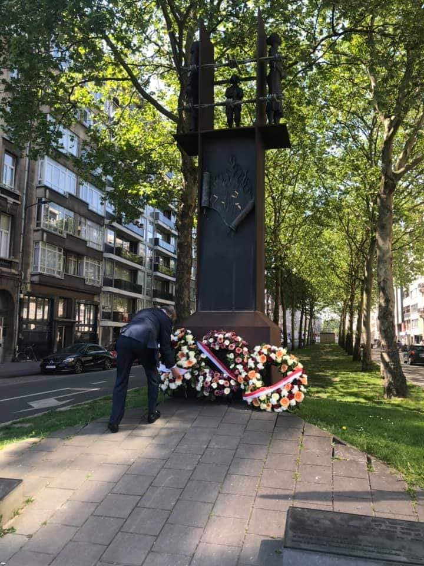

Gedenktekens & Monumenten

Binnenkort beschikbaar
We documenteren de herdenkingsplaatsen in heel Antwerpen. Deze sectie zal beschikbaar zijn binnenkort.
Ga terug
We documenteren de herdenkingsplaatsen in heel Antwerpen. Deze sectie zal beschikbaar zijn binnenkort.
Ga terug